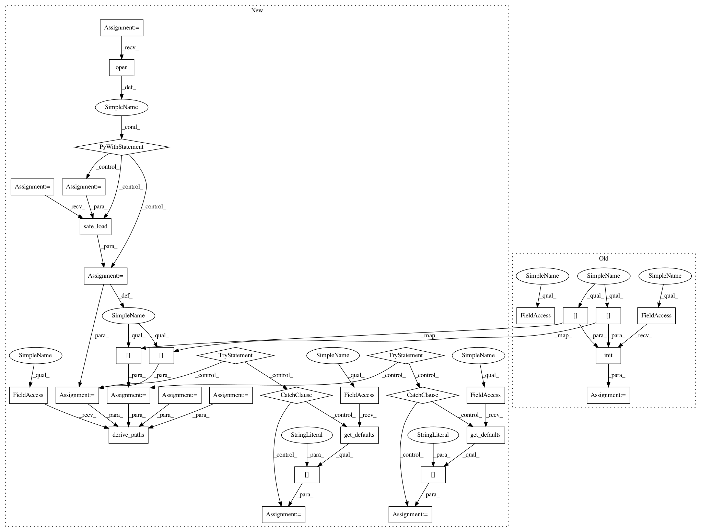

934c745a91d6a4ae15e686da13aaf7441c4dda30,src/pudl/cli.py,,main,#,32
Before Change
coloredlogs.install(fmt=log_format, level="INFO", logger=logger)
args = parse_command_line(sys.argv)
script_settings = pudl.settings.read_script_settings(args.settings_file)
pudl_settings = pudl.settings.init(
pudl_in=script_settings["pudl_in"],
pudl_out=script_settings["pudl_out"]
)
logger.info(f"Checking for input files in {pudl_settings["data_dir"]}")
pudl.helpers.verify_input_files(
ferc1_years=script_settings["ferc1_years"],
eia923_years=script_settings["eia923_years"],
After Change
coloredlogs.install(fmt=log_format, level="INFO", logger=logger)
args = parse_command_line(sys.argv)
with pathlib.Path(args.settings_file).open() as f:
script_settings = yaml.safe_load(f)
try:
pudl_in = script_settings["pudl_in"]
except KeyError:
pudl_in = pudl.workspace.get_defaults()["pudl_in"]
try:
pudl_out = script_settings["pudl_out"]
except KeyError:
pudl_out = pudl.workspace.get_defaults()["pudl_out"]
pudl_settings = pudl.workspace.derive_paths(
pudl_in=pudl_in, pudl_out=pudl_out)
logger.info(f"Checking for input files in {pudl_settings["data_dir"]}")
pudl.helpers.verify_input_files(
ferc1_years=script_settings["ferc1_years"],
In pattern: SUPERPATTERN
Frequency: 3
Non-data size: 33
Instances
Project Name: catalyst-cooperative/pudl
Commit Name: 934c745a91d6a4ae15e686da13aaf7441c4dda30
Time: 2019-08-15
Author: zane.selvans@catalyst.coop
File Name: src/pudl/cli.py
Class Name:
Method Name: main
Project Name: catalyst-cooperative/pudl
Commit Name: 934c745a91d6a4ae15e686da13aaf7441c4dda30
Time: 2019-08-15
Author: zane.selvans@catalyst.coop
File Name: src/pudl/convert/epacems_to_parquet.py
Class Name:
Method Name: main
Project Name: catalyst-cooperative/pudl
Commit Name: 934c745a91d6a4ae15e686da13aaf7441c4dda30
Time: 2019-08-15
Author: zane.selvans@catalyst.coop
File Name: src/pudl/cli.py
Class Name:
Method Name: main
Project Name: catalyst-cooperative/pudl
Commit Name: 934c745a91d6a4ae15e686da13aaf7441c4dda30
Time: 2019-08-15
Author: zane.selvans@catalyst.coop
File Name: src/pudl/convert/ferc1_to_sqlite.py
Class Name:
Method Name: main